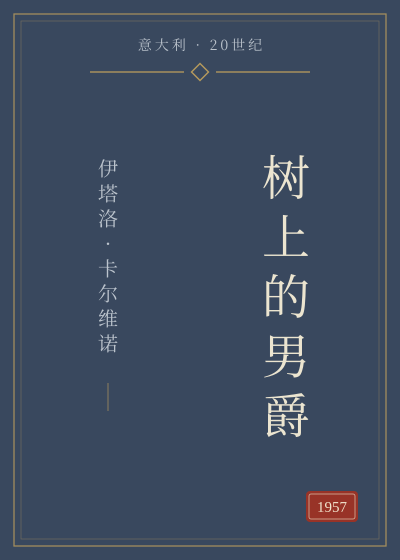
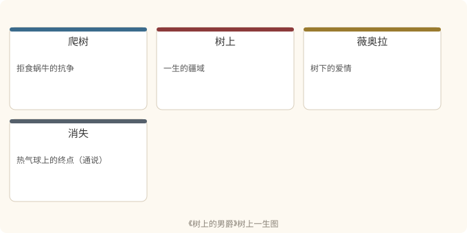

树上的男爵
一、基本信息
| 作者 | 卡尔维诺 |
|---|---|
| 成书/出版 | 1957年（作者页 B096 口径：树上的男爵（1957）） Italo Calvino — Encyclopaedia Britannica（百科全书） |
| 国别/地区 | 意大利 |
| 时代 | 现当代 · 20世纪 |
| 体裁 | 长篇小说 |
| 语言 | 意大利语 |

《树上的男爵》树上一生图（主题·结构图）
二、创作背景
作者页（B096）：卡尔维诺 major_works 载'树上的男爵（1957）'（B096 作者页定位，详见 kanbujian 条核对）。
'我们的祖先'三部曲之一（与《分成两半的子爵》《不存在的骑士》——通说待核）。
三、内容脉络
柯希莫因拒食蜗牛爬上树——一生不再下地（通说待核）。
树上的启蒙、恋爱、革命与 '消失'（通说待核）。
四、主要人物表
| 人物 | 身份 | 说明 |
|---|---|---|
| 柯希莫 | 男爵 | 树上的一生（通说待核） |
| 薇奥拉 | 贵族小姐 | （通说待核） |
五、主题与艺术特点
- '坚持'的寓言：树上即地上（通说）。
- 启蒙时代的家族讽刺（通说待核）。
- 轻逸的哲学（通说——卡尔维诺《新千年文学备忘》语境待核）。
六、影响与评论
- 作者页：卡尔维诺代表作（B096 作者页口径）。
Italo Calvino — Encyclopaedia Britannica（百科全书） - '我们的祖先'三部曲之一（通说待核）。
Italo Calvino — Encyclopaedia Britannica（百科全书）
七、阅读建议
难点
- 寓言性与历史（启蒙/雅各宾）的叠合。
- 树上的空间想象。
- 《树上的男爵》（译林出版社，通说待核）。
- 意大利文原版（Einaudi）。
'我们的祖先'三部曲首选。
八、待核实
- 1957年出版（Einaudi说）核对。
- 柯希莫/薇奥拉人名核对。
- 三部曲总名核对。
本页主要来源
卡尔维诺的其他收录作品：看不见的城市